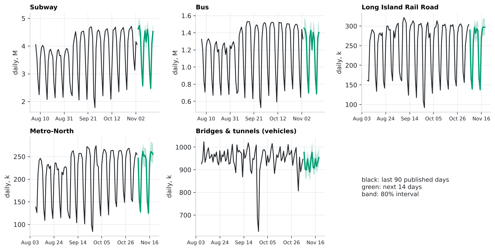
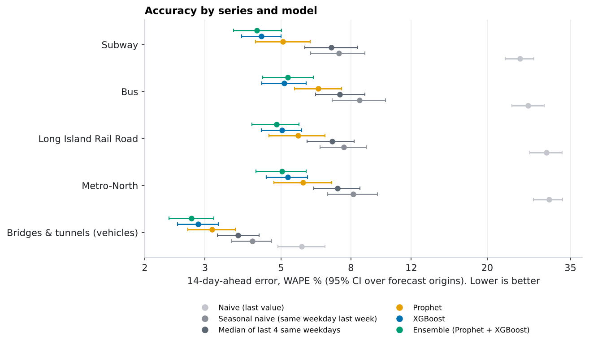
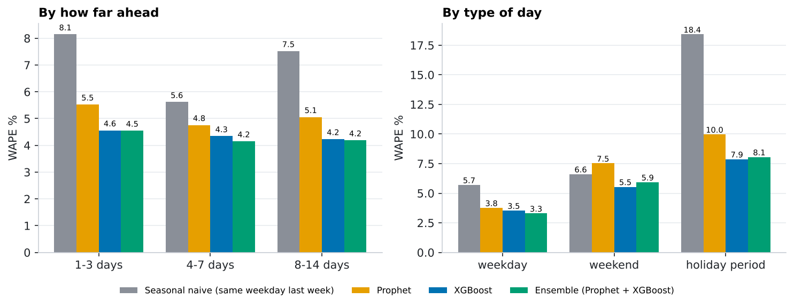
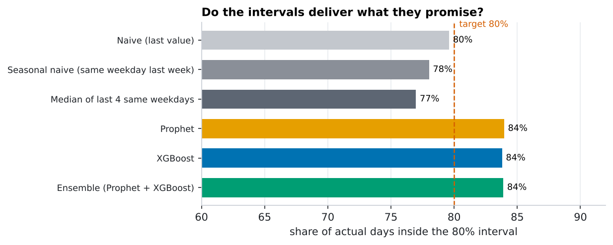
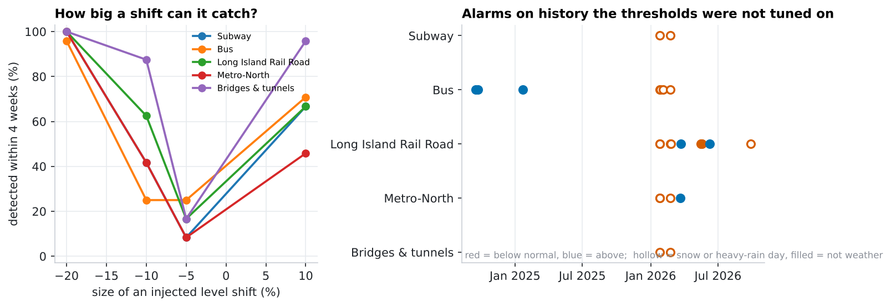
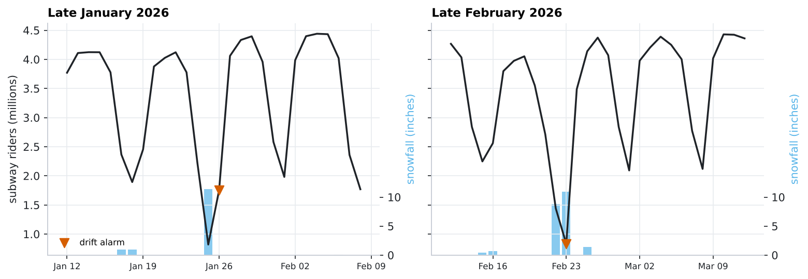
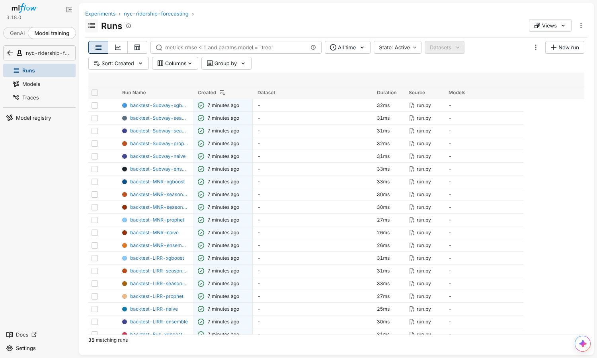

Can we forecast NYC ridership two weeks out, and know when to stop trusting the forecast?
A production-style pipeline on the MTA's daily ridership data: five series (subway, bus, LIRR, Metro-North, bridge and tunnel traffic), six models from a naive baseline to Prophet and XGBoost, a rolling backtest that never peeks at the future, prediction intervals checked for coverage, MLflow tracking, and a drift monitor. It retrains every week on GitHub Actions.
TL;DR. Ridership has strong weekly and holiday structure, so the bar is "beat last week's value", not "beat a naive guess" (plain naive is 23% off). XGBoost and Prophet clear that bar on all five series, and averaging them is the most accurate overall (4.3% vs 7.1%), though the ensemble's edge over XGBoost alone is within noise on every series. XGBoost beats Prophet significantly on subway and bus. Holidays and weekends are hardest (8.1% and 5.9% error vs 3.3% on weekdays). The drift monitor is reliable for big shifts and honest about being blind to small ones: congestion pricing moved bridge-and-tunnel traffic by only about 1.8 points, below what it can detect. Weather explains the alarm clusters: they were the two biggest snowstorms of the winter (a Sunday with 11.4 inches cut ridership 56-68%; a Monday with 10.9 inches cut it 74-100%). Perfect weather knowledge would cut error on bad-weather days from 10% to 7% but overall only from 4.3% to 4.1%.
The data
MTA Daily Ridership and Traffic (2020-03-01 to 2026-11-05, from data.ny.gov): one row per day and mode. Practical issues I handled rather than assumed away: counts arrive as text with thousands separators; the newest days are missing for some modes while the MTA catches up (publication lag), so each series is cut at its last published day; the Staten Island Railway has gaps in 2020-21; and the 2020 collapse and recovery is a different regime from today. I model five modes with complete histories, and I start training in 2021-06 (see the ablation below).
The forecast: next 14 days

Subway, day by day
| Date | Forecast | 80% interval |
|---|---|---|
| 2026-11-04 | 4.62 M | 4.31 - 4.90 M |
| 2026-11-05 | 4.74 M | 4.42 - 5.03 M |
| 2026-11-06 | 4.44 M | 4.14 - 4.71 M |
| 2026-11-07 | 3.24 M | 3.03 - 3.44 M |
| 2026-11-08 | 2.57 M | 2.40 - 2.72 M |
| 2026-11-09 | 4.13 M | 3.85 - 4.38 M |
| 2026-11-10 | 4.55 M | 4.25 - 4.83 M |
| 2026-11-11 | 4.15 M | 3.83 - 4.45 M |
| 2026-11-12 | 4.60 M | 4.25 - 4.93 M |
| 2026-11-13 | 4.32 M | 3.99 - 4.63 M |
| 2026-11-14 | 3.12 M | 2.88 - 3.35 M |
| 2026-11-15 | 2.48 M | 2.28 - 2.65 M |
| 2026-11-16 | 4.10 M | 3.78 - 4.39 M |
| 2026-11-17 | 4.53 M | 4.18 - 4.85 M |
Day-of-week and holidays drive the pattern (for example the weekend dips). The forecast starts at each series' last published day, so subway and bus forecasts begin a day or two before the others.
How the models were built and tested
| Model | What it does |
|---|---|
| Naive | Repeats the last value. Ignores the weekly cycle, so it is a floor. |
| Seasonal naive | Same weekday last week (or the most recent same weekday for horizons beyond 7 days). The real benchmark. |
| Median of 4 weeks | Median of the last four same weekdays; robust to one odd week. |
| Prophet | Trend + weekly and yearly seasonality + New York holidays. |
| XGBoost (direct multi-horizon) | One model for all 14 horizons. Predicts log(actual / base), where base is the median of the last four same weekdays, from lags, recent level and trend, and calendar features of the target day. Features use only information available at the forecast origin (a unit test corrupts all later data and checks nothing changes). |
| Ensemble | Average of Prophet and XGBoost. |
- Rolling-origin backtest: 48 forecast origins from 2023-01-01 to 2026-09-25, spaced 29 days apart so every weekday is an origin (my first version used 28-day spacing, which made every origin a Sunday and confounded forecast horizon with day of week; I caught it because error did not rise with horizon, then fixed and re-ran). At each origin every model is refit on the past only and scored on the next 14 days.
- Metric: WAPE = total absolute error divided by total actual ridership (it is not thrown off by small days like MAPE).
- Uncertainty: the 14 forecasts from one origin share the same shocks, so confidence intervals resample whole origins, never single days.
- Prediction intervals: for each model and horizon band, the relative errors of earlier origins give the interval around a new forecast, and coverage is then measured on later origins.
Results

| Series | Naive | Seasonal naive | Median of last 4 same weekdays | Prophet | XGBoost | Ensemble |
|---|---|---|---|---|---|---|
| Subway | 25.0% (22.6%-27.4%) | 7.4% (6.1%-8.8%) | 7.0% (5.9%-8.4%) | 5.1% (4.2%-6.1%) | 4.4% (3.8%-5.0%) | 4.3% (3.6%-5.0%) |
| Bus | 26.4% (23.6%-29.3%) | 8.5% (7.1%-10.1%) | 7.4% (6.3%-8.8%) | 6.4% (5.5%-7.5%) | 5.1% (4.4%-5.9%) | 5.2% (4.4%-6.2%) |
| Long Island Rail Road | 29.8% (26.7%-33.1%) | 7.6% (6.5%-8.9%) | 7.1% (6.0%-8.2%) | 5.6% (4.6%-6.7%) | 5.0% (4.4%-5.7%) | 4.8% (4.1%-5.6%) |
| Metro-North | 30.3% (27.3%-33.2%) | 8.1% (6.8%-9.6%) | 7.3% (6.2%-8.5%) | 5.8% (4.8%-7.0%) | 5.2% (4.5%-6.0%) | 5.0% (4.2%-5.9%) |
| Bridges & tunnels (vehicles) | 5.7% (4.9%-6.7%) | 4.1% (3.6%-4.7%) | 3.7% (3.3%-4.3%) | 3.1% (2.7%-3.7%) | 2.9% (2.5%-3.3%) | 2.7% (2.4%-3.2%) |
| All series pooled | 22.5% | 7.1% | 6.6% | 5.1% | 4.3% | 4.3% |
Pooled over all series: ensemble 4.3%, XGBoost 4.3%, Prophet 5.1%, median of 4 weeks 6.6%, seasonal naive 7.1%, naive 22.5%. Paired differences, with confidence intervals over origins (negative = the first model is better):
| Series | Ensemble vs seasonal naive | XGBoost vs Prophet | Ensemble vs XGBoost |
|---|---|---|---|
| Subway | -3.12 pp [-4.28, -2.03], p < 0.001 | -0.68 pp [-1.39, -0.10], p = 0.022 | -0.13 pp [-0.44, +0.22], p = 0.445 |
| Bus | -3.24 pp [-4.52, -2.07], p < 0.001 | -1.32 pp [-1.99, -0.71], p < 0.001 | +0.13 pp [-0.18, +0.48], p = 0.437 |
| Long Island Rail Road | -2.77 pp [-3.95, -1.76], p < 0.001 | -0.58 pp [-1.46, +0.15], p = 0.140 | -0.19 pp [-0.57, +0.25], p = 0.358 |
| Metro-North | -3.10 pp [-4.35, -1.98], p < 0.001 | -0.56 pp [-1.46, +0.18], p = 0.161 | -0.21 pp [-0.59, +0.24], p = 0.318 |
| Bridges & tunnels (vehicles) | -1.38 pp [-1.90, -0.87], p < 0.001 | -0.28 pp [-0.65, +0.05], p = 0.102 | -0.13 pp [-0.31, +0.07], p = 0.191 |
- Every model class beats the benchmark on every series; the ensemble's gain over seasonal naive is 1.4-3.2 percentage points and significant everywhere.
- XGBoost vs Prophet: XGBoost is better on every series, but the gap is only statistically clear for subway and bus.
- Ensemble vs XGBoost: the difference is within noise on all five series. I would ship the ensemble for robustness, not because it is proven better.

Holiday periods and weekends are where forecasts are weakest, which is also where staffing decisions are hardest. Models that know the calendar cut holiday-period error to about 8% (XGBoost) from 18% for seasonal naive. One caution: Prophet is worse than seasonal naive on weekends (7.5% vs 6.6%), so its gains come from weekdays and holidays. Error is also nearly flat from 1 to 14 days ahead (4.5% to 4.2% for the ensemble), which says the signal is mostly the weekly and calendar pattern rather than short-term momentum. The ensemble is best on weekdays (3.3%), but XGBoost alone is better on weekends (5.5% vs 5.9%) and holiday periods (7.9% vs 8.1%), so which to deploy depends on which days matter most.
Are the intervals honest?

| Model | Coverage of the 80% interval | Typical interval width (relative to the forecast) |
|---|---|---|
| Naive (last value) | 79.6% | 114.2% |
| Seasonal naive (same weekday last week) | 78.0% | 21.0% |
| Median of last 4 same weekdays | 77.0% | 18.6% |
| Prophet | 84.0% | 20.5% |
| XGBoost | 83.8% | 17.1% |
| Ensemble (Prophet + XGBoost) | 83.9% | 17.2% |
The model intervals are slightly conservative (about 84% vs the 80% target); the baselines' intervals are narrower but come with much larger point errors.
Why train from 2021-06?
Same backtest, three training start dates (WAPE), on the two series with the most data:
| Series | Model | 2021-06-01 | 2022-06-01 | all history (2020-03) |
|---|---|---|---|---|
| Bus | prophet | 6.4% | 8.4% | 7.3% |
| Bus | xgboost | 5.1% | 5.3% | 5.3% |
| Subway | prophet | 5.1% | 9.7% | 5.4% |
| Subway | xgboost | 4.4% | 4.3% | 4.2% |
Starting in 2021-06 helps Prophet (error 6.4% vs 7.3% on bus, 5.1% vs 5.4% on subway, with all history) and is neutral for XGBoost (within 0.2 points either way, no consistent winner). Starting later hurts Prophet badly (9.7% on subway) because it loses the year-over-year seasonality it needs.
Drift monitor: knowing when the forecast stops being trustworthy
Two checks run every week:
- Level-shift detector. Each day's "surprise" is log(actual / median of the last four same weekdays), minus the same quantity one and two years earlier so recurring calendar transitions (December holidays, summer) cancel. A two-sided CUSUM on that, scaled by its own recent spread, alarms when ridership drifts away from its pattern. Thresholds were tuned on 2023-01-01 to 2024-06-30 and evaluated on history from 2024-07-01 onward.
- Forecast quality. The live forecasts are scored against actuals as they arrive and compared with the error distribution the backtest saw. Status now: no live forecasts have matured yet. (It starts producing a score after the first forecasts mature, about two weeks.)

| Series | Alarm threshold (CUSUM h) | False alarms per year (out of sample) | Detects a 20% drop | Detects a 10% drop | Detects a 5% drop |
|---|---|---|---|---|---|
| Subway | 24.5 | 0.9 | 100% (median 7 days) | 42% (median 14 days) | 8% (median 16 days) |
| Bus | 16.0 | 3.0 | 96% (median 7 days) | 25% (median 12 days) | 25% (median 18 days) |
| Long Island Rail Road | 19.5 | 4.7 | 100% (median 6 days) | 62% (median 13 days) | 17% (median 18 days) |
| Metro-North | 23.5 | 1.7 | 100% (median 8 days) | 42% (median 15 days) | 8% (median 13 days) |
| Bridges & tunnels | 24.5 | 0.9 | 100% (median 5 days) | 88% (median 11 days) | 17% (median 17 days) |
- Measured, not assumed: detection power comes from injecting known shifts into the real series at 24 start dates; false-alarm rates come from history the thresholds never saw.
- It reliably catches big shifts (about 20% within a week) and often 10% ones, but mostly misses 5%. It is a smoke alarm, not a microscope.
- Alarms cluster on the same days across series (late January and late February 2026 in particular). Matching them to NOAA weather shows those are the two biggest snowstorms of the winter (see the Weather section); most other alarms are weather days too, and the monitor now labels them.
- A real test, honestly reported: congestion pricing started 2025-01-05. Year-over-year, bridge-and-tunnel traffic changed from +0.9% in the eight weeks before to -0.9% in the eight weeks after, a 1.8-point move, far below the monitor's sensitivity, so it (correctly, by design) did not alarm.
Weather: explaining the alarms, and what it can (and cannot) do for forecasts
Using NOAA's daily record for Central Park (snowfall, snow depth, rain, temperature; 2020-03-01 to 2026-11-04). It does two different jobs here, and the difference matters: diagnosis uses observed weather after the fact, while forecasting two weeks ahead cannot know the weather, so feeding observed weather into a forecast is an oracle experiment (an upper bound), not something a live forecast can do.
Snowstorms are the biggest shocks in the data

Change in ridership on each storm day versus the same weekday over the previous four weeks:
| Date | Snowfall | On the ground | Subway | Bus | Long Island Rail Road | Metro-North | Bridges & tunnels |
|---|---|---|---|---|---|---|---|
| 2020-12-16 (Wed) | 6.5 in | 0 in | -8% | -17% | -14% | -11% | -3% |
| 2021-02-01 (Mon) | 14.8 in | 5 in | -63% | -65% | -88% | -66% | -68% |
| 2022-01-07 (Fri) | 5.8 in | 6 in | -10% | -17% | -26% | -29% | -31% |
| 2022-01-29 (Sat) | 7.3 in | 6 in | -32% | -55% | -85% | -52% | -61% |
| 2026-01-25 (Sun) | 11.4 in | 1 in | -58% | -67% | -68% | -67% | -56% |
| 2026-02-22 (Sun) | 8.8 in | 0 in | -23% | -13% | -18% | -13% | -5% |
| 2026-02-23 (Mon) | 10.9 in | 14 in | -74% | -80% | -100% | -88% | -86% |
On Sunday 2026-01-25 (11.4 inches, the second-biggest snowfall in the six-year record) ridership fell 56-68% on every series; on Monday 2026-02-23 (10.9 inches, 14 inches on the ground) it fell 74-100%, and the LIRR carried nobody. Those are the days of the two alarm clusters that the monitor flagged in section "Drift monitor".
How much does weather move ridership?
A regression of each day's surprise on weather (relative to the weather on the four baseline days; robust standard errors; fitted on 2021-06 onward). Intervals are wide because there are only a handful of big storms in the record.
| Series | 2 inches of snow | 6 inches | 11 inches | Per inch of rain |
|---|---|---|---|---|
| Subway | -0% (-7% to +7%) | -26% (-34% to -17%) | -55% (-66% to -39%) | -5% |
| Bus | -6% (-13% to +2%) | -33% (-41% to -24%) | -60% (-71% to -45%) | -6% |
| Long Island Rail Road | +1% (-11% to +15%) | -45% (-59% to -25%) | -80% (-91% to -53%) | -5% |
| Metro-North | +3% (-6% to +13%) | -33% (-43% to -20%) | -68% (-80% to -47%) | -7% |
| Bridges & tunnels | -2% (-12% to +8%) | -31% (-42% to -18%) | -61% (-77% to -36%) | -3% |
Rain costs roughly 3-7% per inch. Cold alone shows no clear effect once snow is accounted for.
Which drift alarms were weather?
Of the 26 out-of-sample alarms across the five series, 16 fell on or right after a snow or heavy-rain day (the rule: at least 1 inch of snow today or yesterday, 3 inches on the ground, or 1.5 inches of rain). The other 10 are not weather and are the ones worth a human look. For example, LIRR ran 4 consecutive days well below normal in mid-May 2026 on hot, dry days; I did not investigate the cause.
| Series | Date | Direction | Weather that day |
|---|---|---|---|
| Bus | 2024-09-17 | above normal | 79°F high, no snow, 0.00 in rain |
| Bus | 2024-09-24 | above normal | 68°F high, no snow, 0.00 in rain |
| Bus | 2025-01-22 | above normal | 20°F high, no snow, 0.00 in rain |
| LIRR | 2026-03-23 | above normal | 50°F high, no snow, 0.40 in rain |
| LIRR | 2026-05-16 | below normal | 80°F high, no snow, 0.00 in rain |
| LIRR | 2026-05-17 | below normal | 87°F high, no snow, 0.00 in rain |
| LIRR | 2026-05-18 | below normal | 88°F high, no snow, 0.00 in rain |
| LIRR | 2026-05-19 | below normal | 93°F high, no snow, 0.00 in rain |
| LIRR | 2026-06-08 | above normal | 75°F high, no snow, 0.00 in rain |
| MNR | 2026-03-22 | above normal | 63°F high, no snow, 0.15 in rain |
A negative result: adjusting the monitor for weather did not help
The obvious idea is to subtract the predicted weather effect before looking for drift. I fitted it only on data before July 2024 and tested it on the 2026 storms:
| Day (2026) | What actually happened | What the weather model predicted |
|---|---|---|
| 2026-01-25 (storm day) | -56% to -68% | -45% to -72% |
| 2026-01-26 (the day after) | -49% to -77% | -4% to -14% |
| 2026-02-23 (second storm) | -74% to -95% | -46% to -74% |
The model gets the storm day roughly right, but badly under-predicts the day after (snow cleanup, depth and disruption last longer than the snowfall itself), so the alarms stayed, and the tuning then picked a more sensitive threshold that added alarms elsewhere:
| Series | Out-of-sample alarms, original | With a regression weather adjustment |
|---|---|---|
| Subway | 2 (0.9/yr) | 4 (1.7/yr) |
| Bus | 7 (3.0/yr) | 7 (3.0/yr) |
| Long Island Rail Road | 11 (4.7/yr) | 14 (6.0/yr) |
| Metro-North | 4 (1.7/yr) | 3 (1.3/yr) |
| Bridges & tunnels | 2 (0.9/yr) | 7 (3.0/yr) |
So the pipeline labels alarms instead of silently removing them: each alarm is marked as a weather event or not (the rule above), and only unexplained alarms need attention.
Can weather improve the forecast?
I re-ran the backtest with XGBoost given the actual weather of each target day: first only for the next 3 days (a perfect short-range weather forecast), then for all 14 days (a perfect long-range forecast, which does not exist). A bug caught along the way: my backtest first passed the weather to every model, including the "no weather" baseline, which made it score identically to the full oracle; a regression test now prevents that.
| Forecast model | All days | Bad-weather days (160 series-days) | Calm days |
|---|---|---|---|
| XGBoost with no weather (what production uses) | 4.33% | 10.0% | 4.09% |
| + perfect weather for the next 3 days | 4.18% | 8.6% | 4.00% |
| + perfect weather for all 14 days | 4.09% | 6.9% | 3.96% |
The 3-day oracle is significantly better than no weather on Subway, Bus, Metro-North (paired over origins, p < 0.05); the all-14-days oracle is significantly better only on bus, because its extra gain is concentrated in a few storms. The gain sits almost entirely on bad-weather days (10.0% to 6.9% with perfect weather); on calm days it is 4.09% to 3.96%.
Takeaway: weather is worth adding where it can be known, namely the next few days, using archived weather forecasts so the backtest is realistic (not done yet: forecast skill will shrink these gains). It will not make a 14-day forecast much better on ordinary days.
The production pipeline
- Weekly run on GitHub Actions (
.github/workflows/weekly.yml): pull the latest published days from the data.ny.gov API, refit every model on all data, write the next 14 days with intervals, score earlier forecasts against actuals, run the drift monitor, log to MLflow, rebuild this page. - MLflow tracking: 40 runs logged (one per series and model for the backtest, one per live forecast) with parameters, metrics, data end date and git commit. The run table is exported to
docs/assets/mlflow_runs.json. - Failure handling: if the API is unreachable the run keeps the existing data and says so; every forecast file is kept in
forecasts/, so the live track record builds up automatically. - Weather: the weekly run also refreshes NOAA weather and labels each alarm as a weather event or not.
- Tests: 34 tests, including no-leakage, interval no-peeking, origin spacing, drift-detector calibration and a regression test that the production model never sees weather.

Limitations
- Systemwide daily totals only: no events, service changes or fares as predictors, and no station-level detail. Weather is used for diagnosis and in an oracle experiment, not in the production forecast.
- Weather is a single station (Central Park); snowfall and storm timing differ across the five boroughs and the suburbs the railroads serve.
- The 14-day horizon and weekly retraining are my choices; shorter-horizon or intraday forecasting would need different data.
- Most backtest origins fall after the pandemic recovery, so a new regime shock would test the models differently than 48 calm-ish origins do.
- Intervals assume future errors resemble past errors; they widen only through the retraining cycle.
Reproduce
pip install -e ".[dev]"
python -m ridership.run backtest # ~4 min: 5 series x 6 models x 48 origins
python -m ridership.run forecast
python -m ridership.run monitor
python -m ridership.run track
python analysis/build_report.py
pytest